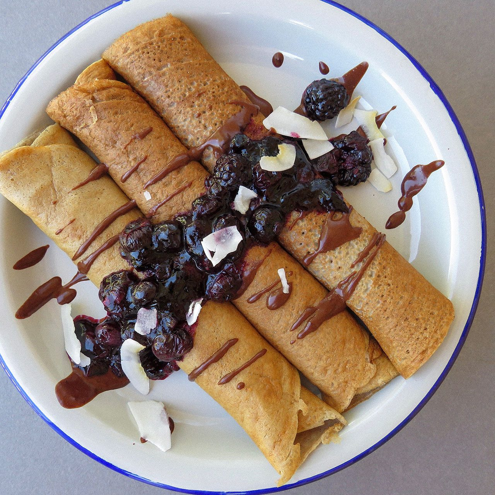

Receta de crepes sin azúcar
Esta receta es perfecta para los amantes de este postre
que quieran cuidarse, es perfecta para desayunos y meriendas.
Ingredientes:
- 50g de harina integral o de avena
- 125ml de leche desnatada
- 1 huevo
- Una pizca de stevia
- Un poco de mantequlla para engrasar

Preparación:
- Ponemos todos los ingredientes en la batidora y batimos hasta consegir
una masa líqida y sin grumos.
- Ponemos una sartén a fuego medio alto, con una pizca de mantequilla.
Cuando la mantequilla esté derretida y empiece a hacer burbujitas,
la tendremos lista. También puedes ir tirando gotitas de masa, como
cuando preparas una tortilla, para ver si está caliente.
- Echamos aproximadamente una cuarta parte de la masa sobre la sartén.
Al minuto más o menos ya podremos darle la vuelta con una espátula,
la hacemos por el otro lado, y la sacamos.
- Ponemos la fruta cortada en trocitos en medio de la crepe, enrollamos
por ambos lados, ¡y listo! Ya tenemos nuestras crepes :)
Valores nutricionales:
- Proteinas
- La proteina en este plato la aporta principalmente el huevo y la leche.
- Hidratos de carbono
- Los hidrados de carbono están representados por la harina que al ser integral aporta fibra.
- Grasas
- Las grasas las aporta la mantequilla.
- Vitaminas
- El huevo aporta la vitamina E y la harina integral todo tipo de nutrientes.
- Azúcares
- Es una receta baja en azúcares debido al uso de la stevia.
Autora:
mingi